| Part | Content | Marks |
|---|---|---|
| Sec A Q1(a) | 10 MCQs | 10 |
| Q1 (b)–(d) | true/false, fill-in, match (5 each; order differs by year) | 15 |
| Q1(e) | topographic map extract: 8–9 short parts (contour interval, grid reference, scale, drainage, suitability, tourism…) | 15 |
| Q1(f) | outline map of Asia (4 items) | 4 |
| Q1(g) | outline map of Bhutan (6 items) | 6 |
| Sec B Q2–Q7 | attempt ANY FIVE of six; each question has 5 parts (a–e) worth 2 marks (some 1 or 3) | 50 |
| Chapter | 2023 | 2025 |
|---|---|---|
| 1 Universe | Q1a(i),d(iii),Q2d | Q1a(iii),b(iii),c(i),Q5b |
| 2 Earth & plates | Q1a(iv,v),d(iv),Q2e,Q5a,e | Q1a(vi),c(iv),Q2c,Q5a |
| 3 Landforms | Q1a(vi),Q6a,b,Q7e | Q1d,Q7a,b |
| 4 Climate etc. | Q1a(iii),Q3b,Q5c,d,Q7d | Q1a(ii,v),c(ii,iii),Q2e,Q7d |
| 5 Time | Q1a(ii),c(i),Q3a,Q5b,Q7c | Q1a(iv),Q3e,Q4a,c |
| 6 Map reading | Q1e(i–viii) | Q1a(i),b(i),e(i–ix),Q2a,Q5c |
| 7 Outline maps | Q1f,g | Q1f,g |
| 8 Population | Q1a(viii,ix),c(iii,v),Q3d,Q4a,b,Q7a | Q1a(x),Q2b,Q3a,c,Q4b,e,Q6c |
| 9 Agriculture | Q1a(vii),d(v),Q3c,Q6d | Q2e,Q3b,Q4d,Q5e |
| 10 Minerals/industry | Q1b,d(i),Q2a,b,Q4c | Q1a(viii),b(ii),Q2d,Q5d,Q6a,Q7c |
| 11 Biodiversity | Q1c(ii),Q3e,Q6c,e | Q1a(vii),b(v),Q6d,Q7b,e |
| 12 Disasters | Q1a(x),d(ii),Q2c,Q4d,Q7b | Q1a(ix),c(v),Q3d,Q6b,e |
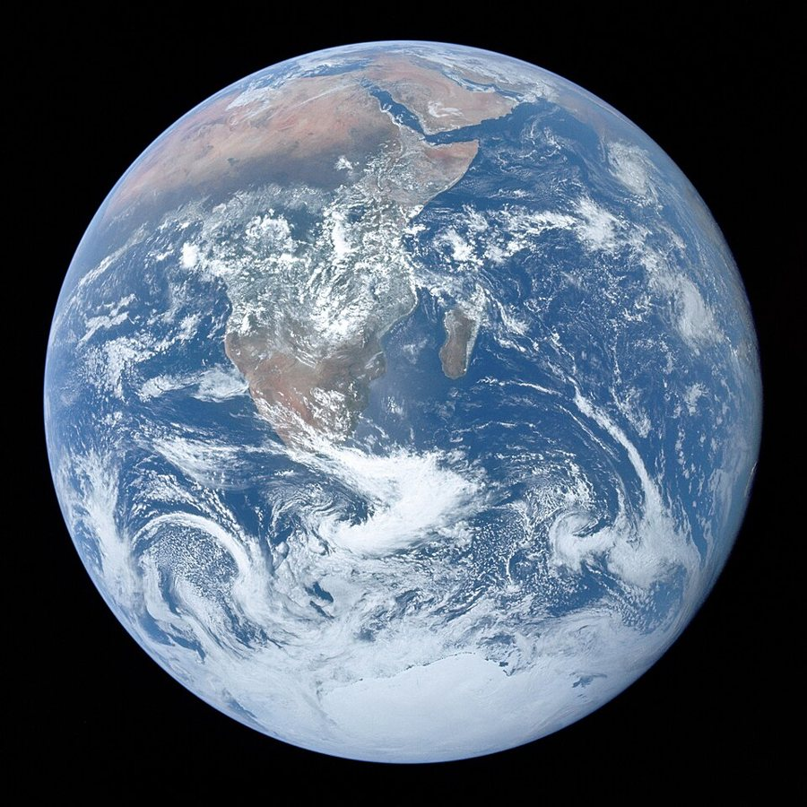
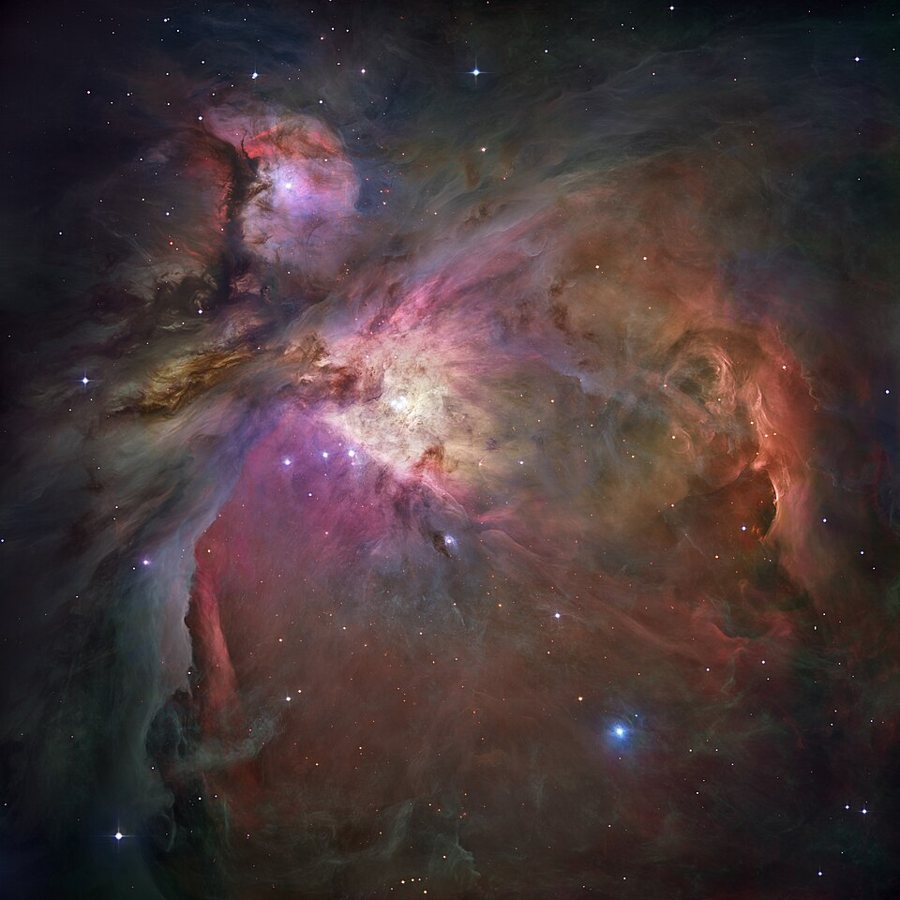
| Big Bang | Solar Nebula | |
|---|---|---|
| Explains | origin and expansion of the universe | origin of the Sun and planets |
| Age | 13.8 billion years | 4.6 billion years |
| Key terms | expansion, red shift, CMB | nebula, disc, accretion |
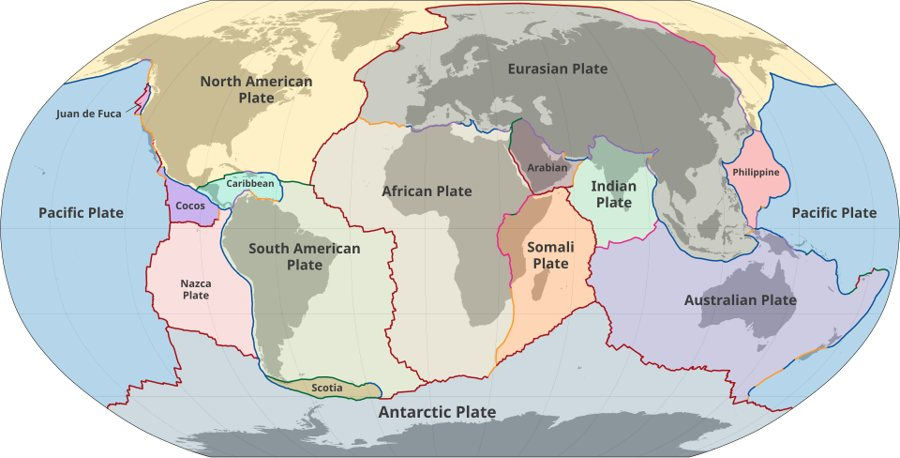
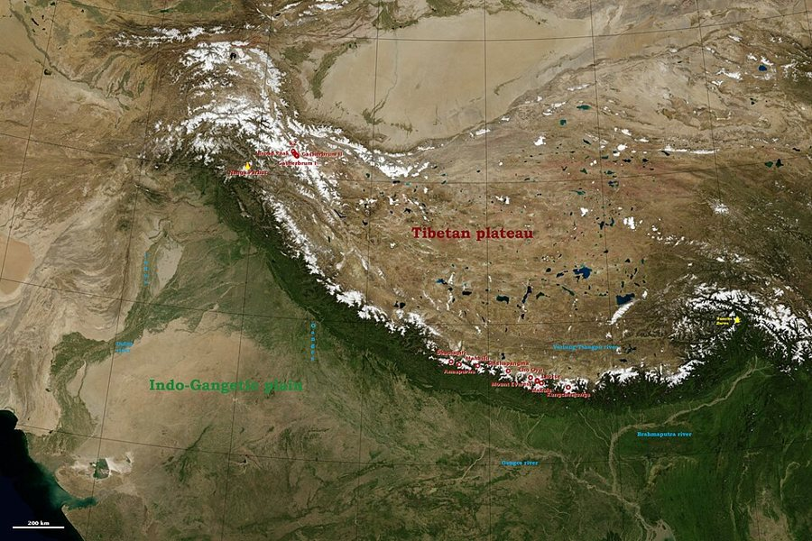
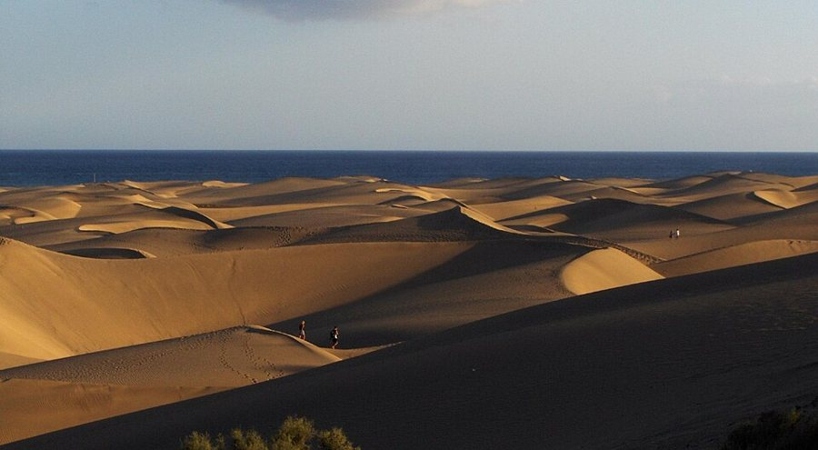
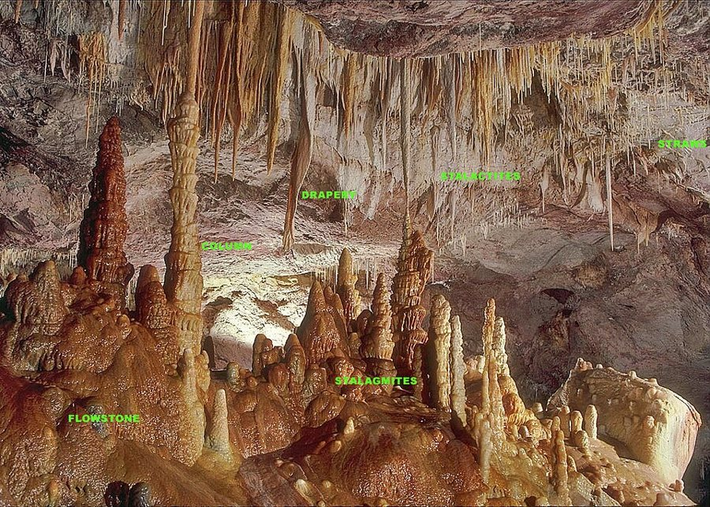
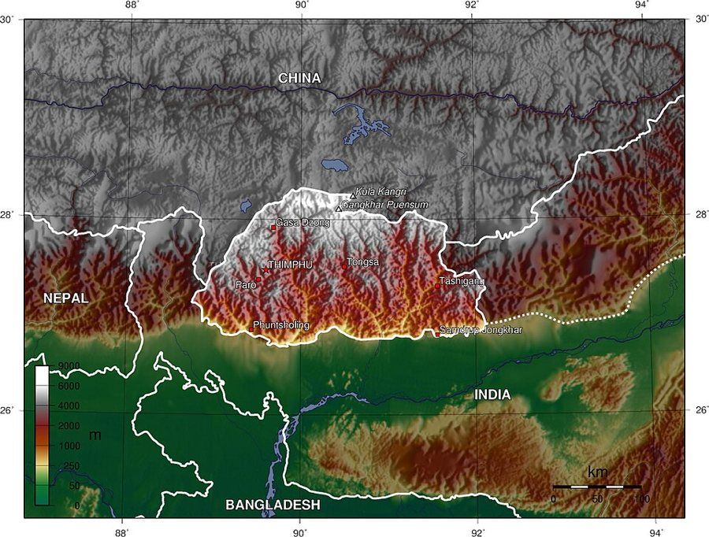
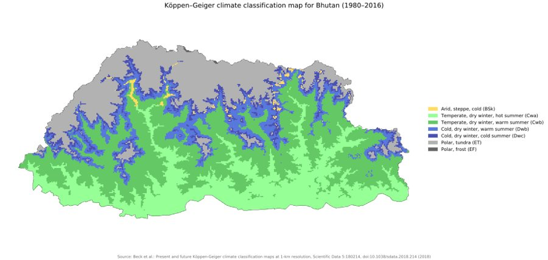
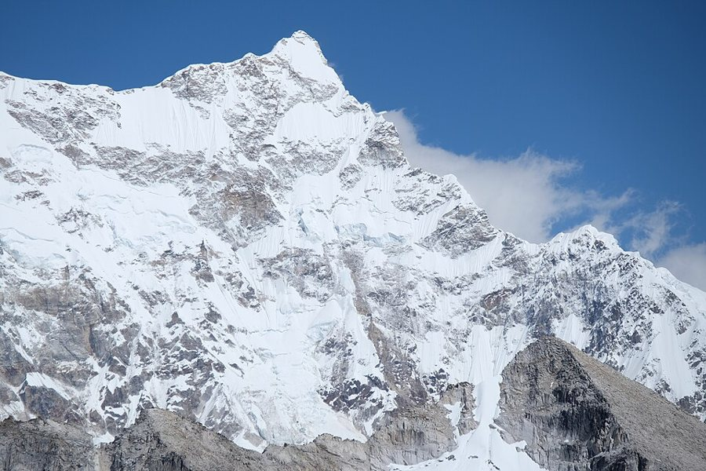
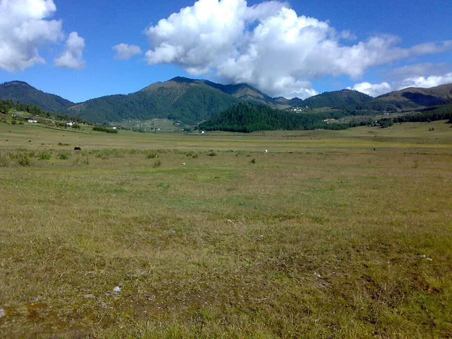
| Figure A (P23 Q5c) | Figure B |
|---|---|
| Alpine meadow / scrub | Temperate coniferous forest |
| Treeless: grasses, flowers, low shrubs | Dense tall trees (blue pine, fir, hemlock) |
| Very high altitude; very cold, short growing season | Lower (about 2000–3500 m); cool, more moisture |
| Thin soil, strong winds | Deeper soil; sheltered slopes |
| Grazing: yaks; herb collection | Timber, fuelwood, non-timber forest products |
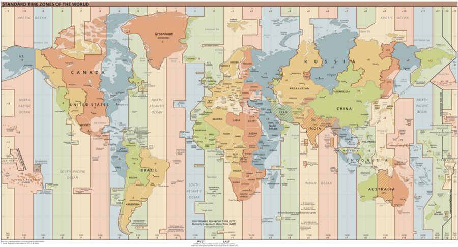
| Type | Meaning / example |
|---|---|
| Statement scale | “1 cm represents 0.5 km” |
| Representative fraction (RF) | 1 : 50,000 (no units; same unit on map and ground) |
| Linear / bar scale | a drawn line showing ground distances |
RF → statement scale: divide the denominator by 100,000 to get km per cm (denominator in cm ÷ 100,000 cm per km).
| RF | Statement scale |
|---|---|
| 1 : 50,000 | 1 cm = 50,000 cm = 500 m = 0.5 km |
| 1 : 600,000 | 1 cm = 600,000 cm = 6 km |
| Colour / sign | Shows |
|---|---|
| Blue | rivers, streams, lakes, springs, canals |
| Green | forest, scrub, grass, orchards, cultivated land |
| Brown | contours, spot heights, relief features |
| Black | man-made features: buildings, bridges, boundaries, names |
| Red | roads, motor roads, built-up areas |
| Dashed line | footpath / mule track; broken line = boundary |
| Question type | What to write |
|---|---|
| Suitability (farming, industry, tourism) | 1) relief (flat or steep?) 2) water/river 3) roads and settlements 4) vegetation/land use |
| Compare drainage | name the pattern, say how many streams, slope, where the main river flows |
| Man-made feature at a grid reference | name it (building, bridge, road) + one use (links, worship, shelter) |
| Length or distance | thread, ruler, × scale (0.5 km per cm at 1:50,000) |
| Transport choice | look at the line symbol: road, track or footpath |
| Question | Answer and location |
|---|---|
| P25 (i) largest hot desert in SW Asia | Arabian Desert – Saudi Arabia / Arabian peninsula |
| (ii) mountain Urals ∧∧∧ | Ural Mountains – Russia, run north–south along ~60° E, boundary of Europe and Asia |
| (iii) Hwang Ho (thick line) | Yellow River – from the Tibetan Plateau through northern China to the Bohai/Yellow Sea |
| (iv) sea on the border of Europe and Asia | Black Sea (between Turkey, Ukraine/Russia and the Caucasus); the Caspian Sea is also on the border (check which your atlas shows) |
| P23 (i) highest plateau | Tibetan Plateau (“Roof of the World”, ~4,500 m), north of the Himalayas |
| (ii) Caucasus ∧∧∧ | Caucasus Mountains – between the Black Sea and the Caspian Sea (Georgia, Armenia, Azerbaijan, Russia) |
| (iii) Yangtze river | Yangtze (Chang Jiang) – from the Tibetan Plateau east to the East China Sea at Shanghai |
| (iv) Yellow Sea | Yellow Sea – between China and the Korean peninsula |
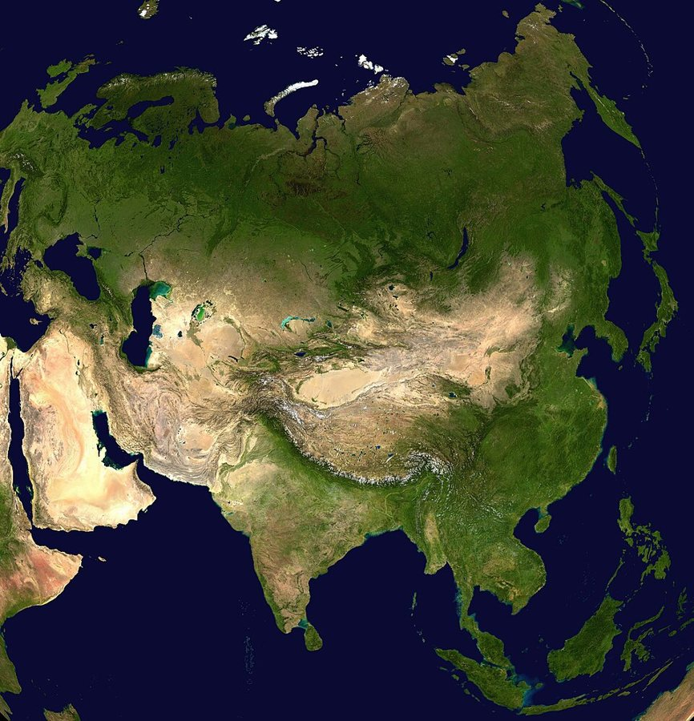
| Question | Answer and location |
|---|---|
| P25 (i) river with largest drainage basin | Drangme Chhu (Manas) in the east (check); the other major rivers: Amo, Wang, Puna Tsang Chhu |
| (ii) La with 108 Druk Wangyal Chortens | Dochula – on the Thimphu–Punakha road (3,100 m) |
| (iii) Jhomolhari ▲ | north-west, on the Thimphu–Paro border (7,326 m) |
| (iv) first dzong built by Zhabdrung | Simtokha Dzong (1629), south of Thimphu — mark “DZ” |
| (v) black-necked crane festival | Phobjikha (Gangtey) valley, Wangdue Phodrang — 11 Nov each year |
| (vi) Punakha Dzong ● | Punakha, at the meeting of the Pho and Mo Chhu |
| P23 (i) river of the first hydropower project | Wang Chhu (Chhukha Hydropower, Chukha) |
| (ii) La between Sha and Mangde ][ | Pele La (Wangdue Phodrang – Trongsa) (check) |
| (iii) Masa Gang ∧∧∧ | north-west border (Gasa), over 7,000 m |
| (iv) dzong where the First King was enthroned “DZ” | Punakha Dzong (1907) |
| (v) oldest protected area “OP” | Royal Manas National Park (1966), south-central, bordering India |
| (vi) Tsenda Gang ∧∧∧ | north-west border near Masa Gang, over 7,000 m |
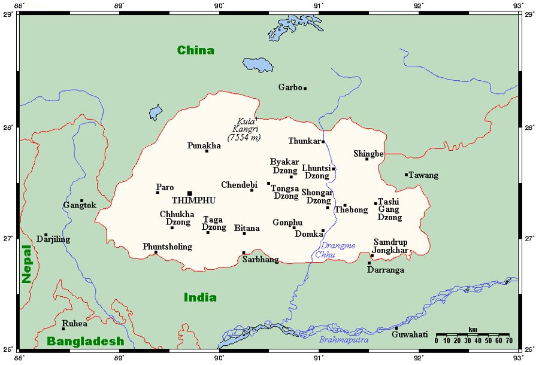
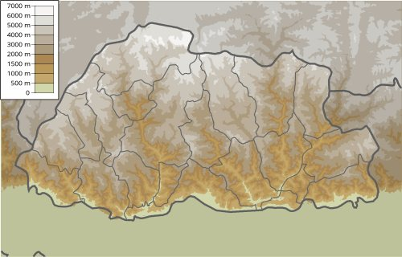
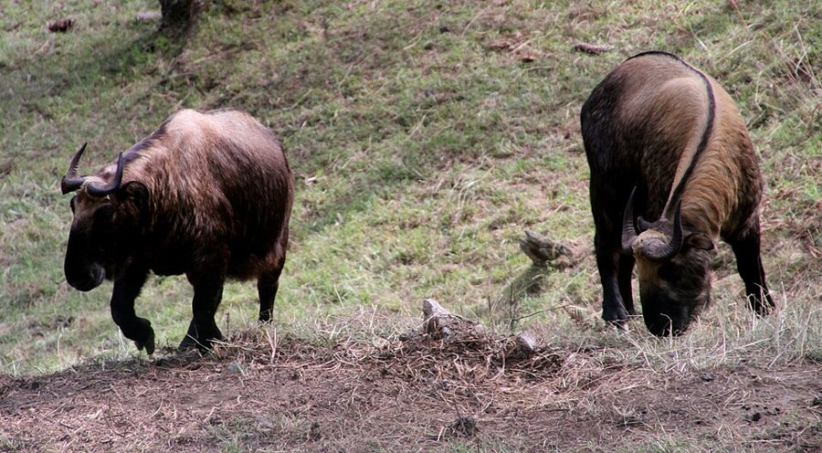
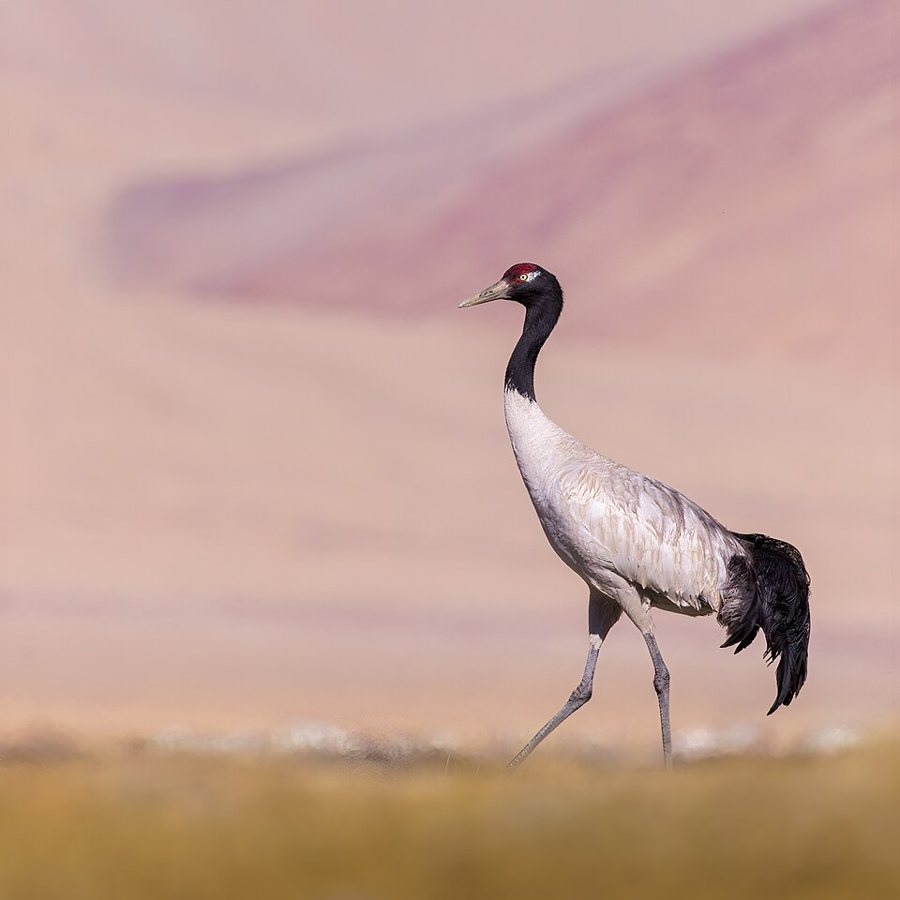
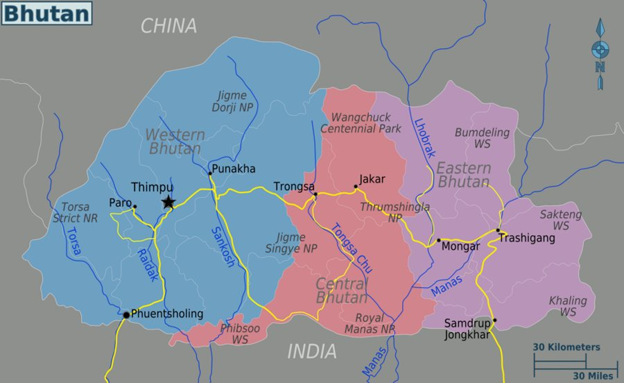
| Species diversity (P25 Q6d) | Genetic diversity |
|---|---|
| Variety of different species in an area (number and abundance) | Variety of genes within one species |
| e.g. tiger, takin, red panda, cranes, orchids in one forest | e.g. many varieties of red rice, potato or buckwheat |
| Higher level; shows richness of an area | Helps a species adapt to disease and climate change |
| No. | Ans | Why (short) |
|---|---|---|
| i | B | 78E/11 (3rd column, 3rd row) |
| ii | B | summer monsoon is approaching (Jan–May rise) |
| iii | A | Georges Lemaître proposed the Big Bang |
| iv | C | 9 AM Bhutan − 6 h = 3 AM London |
| v | C | Gasa’s climate is set by altitude |
| vi | B | collision of tectonic plates |
| vii | C | wide variety of habitats = ecosystem diversity |
| viii | D | R&D and IT = quaternary |
| ix | D | Lugge Tsho GLOF, Punakha 1994 |
| x | D | healthcare, education, living standards (i, ii, iv) |
| Part | Answers |
|---|---|
| (b) i–v | i FALSE · ii FALSE (check: hydropower is the most reliable) · iii FALSE (that is the solar nebula theory) · iv TRUE · v TRUE |
| (c) i–v | i accretion · ii lower · iii sub-tropical (check) · iv Pangaea · v glacial lake outburst flood (GLOF) |
| (d) i–v | i d surface creep · ii a deposition · iii c saltation · iv e abrasion · v b suspension |
| (e) map | (i) contour interval from the legend (20 m typical) (map) · (v) 1 cm = 6 km |
| No. | Ans | Why (short) |
|---|---|---|
| i | B | a wider gap between galaxies |
| ii | B | 9:04 a.m. (61° × 4 = 4 h 04 ahead) |
| iii | D | collecting Balu-Sulu is not a reason against living there |
| iv | C | converging Indian and Eurasian plates |
| v | D | asthenosphere |
| vi | B | stalactite is depositional, not erosional |
| vii | A | farm cooperatives |
| viii | D | larger towns are fewer, not equal in number |
| ix | B | mortality decreases |
| x | B | seismic activity is natural, not human-made |
| Part | Answers |
|---|---|
| (b) i–v | i d petroleum (check) · ii a manganese · iii e thorium · iv b copper · v c limestone (check) |
| (c) i–v | i FALSE (GPS is advanced) · ii TRUE · iii TRUE · iv FALSE (more greenhouse gas traps MORE heat) · v TRUE |
| (d) i–v | i quaternary · ii fire · iii nebula · iv fold mountains · v subsistence farming |
| (e) map | (viii) 1 cm = 0.5 km; others depend on the 78M/11 sheet (map) |